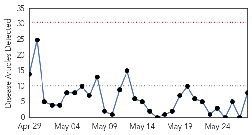
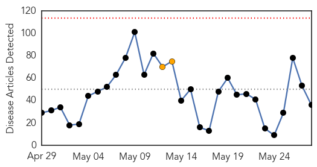
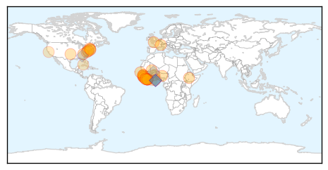

Measles
30-Day Web Trend
0 alerts, 0 warnings

30-Day Twitter Trend
0 alerts, 0 warnings
Article Locations
Article Confidences

Top Articles:
- 0.993
- No more measles cases in Hamilton « LiveNews.co.nz
- 0.935
- Urgent funding needed to prevent imminent closure of health care projects in Iraq - Iraq
- 0.909
- Sky Tower climbers contacted over measles scare
- 0.857
- In Vietnam, an anatomy of a measles outbreak
- 0.842
- N.J. confirms patient with measles attended Middlesex County funeral home
- 0.825
- Where Does U.S. Measles Immunization Rate Rank in World?
- 0.637
- Measles cases in Taipei duty-free shop rise to 10
- 0.603
- Religious Schools are Not Immune – The Startling Low Rate of Vaccine Policies in Jewish Schools
Top Tweets:
-
No tweets found for May 28, 2015
Ebola
30-Day Web Trend
0 alerts, 2 warnings

30-Day Twitter Trend
0 alerts, 0 warnings

Article Locations
Article Confidences

Top Articles:
- 1.000
- Ebola Outbreak in Guinea May Spread
- 1.000
- Red Cross, WHO Send Medical Teams To Guinea-Bissau, Guinea After Possible Cross-Border Ebola Patient
- 0.999
- Senegal Shuts Border With Guinea to Prevent Ebola Spread
- 0.999
- Ebola cases surge in Guinea, Sierra Leone
- 0.999
- POLICY Briefings Archive Liberia is Ebola-free, but recovery will take time
- 0.998
- WHO warns that Ebola crisis isn't over
- 0.997
- How Computer Modelers Took On the Ebola Outbreak
- 0.997
- Man Dies Of Rare Illness, Caught in Libera
- 0.996
- Malaysia General Business Sports and Lifestyle News
- 0.995
- S/Africa, Japan lift travel bans on Liberia
- 0.995
- Lassa Fever victim: A case of missed opportunities, doctors say
- 0.995
- Red Cross sends Ebola team to at-risk GBissau border
- 0.991
- Lassa Fever – United States of America
- 0.989
- WHO’s Public Health Emergency Fund
- 0.987
- 250 Nigerian medical workers on Ebola mission to Liberia return to heroic welcome
- 0.985
- 150 possibly had contact with Lassa fever victim
- 0.984
- In Sierra Leone, Care Kits Deliver Assistance and Hope to Families - Sierra Leone
- 0.975
- Bill Gates fears a Spanish flu-like disease could wipe out 33 million people
- 0.942
- When Ebola Turned Routine Care Into a Life-threatening Event
- 0.940
- CDC: 150 possibly had contact with Lassa fever victim
- 0.917
- Light Foundation Ghana partners with World Education Ghana
- 0.896
- Vice President Foh departs for Kailahun with the Ebola Message
- 0.892
- Bill Clinton hopes to keep working _ whatever Hillary does
- 0.892
- Bill Clinton hopes to keep working _ whatever Hillary does: News
- 0.880
- The Courier Bill Clinton hopes to keep working
- 0.870
- Red Cross deploys Ebola preparedness team to at-risk border area of Guinea-Bissau
- 0.844
- Guinea-Bissau: Red Cross deploys Ebola preparedness team to at-risk border area of Guinea-Bissau
- 0.785
- Red Cross deploys Ebola preparedness team to at-risk border area of Guinea-Bissau - Guinea-Bissau
- 0.767
- News in brief : HEALTH
- 0.737
- After Ebola: What next for West Africa’s health systems
- 0.729
- Several Oregon facilities among nation's secretive biolabs
- 0.698
- Red Cross helps Liberian children return to school following Ebola outbreak
- 0.636
- Lion Regional Governor Visits JN David Hospital
- 0.612
- Highway Linking Liberia, Côte d’Ivoire Begins Soon - Dr. Kaberuka
- 0.557
- Street Child-Liberia honored
- 0.550
- Delaware lab mailed anthrax could reopen next week
Top Tweets:
- 0.938
- Survivors Strive for Ebola-free Sierra Leone - Voice of America http://t.co/Izf6w7HGKr ebola EVD
- 0.938
- Survivors Strive for Ebola-Free Sierra Leone - Voice of America http://t.co/r2Im6K9vyg ebola EVD
- 0.919
- Red Cross helps Liberian children return to school following Ebola outbreak - International Federa... http://t.co/RwHJLK8j3v ebola EVD
- 0.917
- Ebola Update: 27,013 confirmed, probable & suspected cases reported in 3 most affected countries, with 11,134 deaths. EbolaResponse
- 0.913
- Ebola's Cellular Key - The Scientist http://t.co/316GNXRXBE ebola EVD
- 0.904
- Too many dying in Sierra Leone as result of Ebola response not virus itself – report:... http://t.co/Yl8GKaetRP
- 0.895
- Blood from Dallas nurse used to create anti-Ebola drug - WFAA http://t.co/ytGjMkT5qO ebola EVD
- 0.886
- New Report: Health worker Ebola infections in Guinea, Liberia and Sierra Leone http://t.co/ZLruz3FKvv EbolaResponse
- 0.877
- Pre-deployment trainingmaterial: Ebola virus disease flip book http://t.co/TzkVmMvZSm
- 0.831
- The Ebola outbreak in West Africa is not over yet. WHO EbolaResponse: disease detection http://t.co/yQthY6n5YO http://t.co/hq1RJYE3DC
- 0.815
- Meet CDC DiseaseDetective Jeff who traveled to 100+ health centers & hospitals in Sierra Leone to fight Ebola. http://t.co/YuGLxcJJdj
- 0.813
- 28 May - news pouch on avianflu avianinfluenza Ebola EbolaResponse MERS indiaheatwave http://t.co/J0S91bvJP9
- 0.810
- RT: The Ebola outbreak in West Africa is not over yet. WHO EbolaResponse: disease detection http://t.co/yQthY6n5YO http://t.co/hq1RJ…
- 0.802
- In SierraLeone, there have been no new confirmed Ebola cases reported in the last 6 days (21 – 26 May). EbolaResponse
- 0.788
- Bill Clinton: 'I'm officially Ebola-free' - CNN http://t.co/iEHl8ZrWKL ebola EVD
- 0.784
- Red Cross sends Ebola team to at-risk GBissau border - Yahoo News http://t.co/J3cE665WZd ebola EVD
- 0.703
- The Ebola outbreak in West Africa is not over yet. WHO EbolaResponse continues on the ground http://t.co/yQthY6n5YO http://t.co/dFrt40BqwY
- 0.690
- Ebola touched everyone, so everyone needs 2 work together 2 unify Guinea against Ebola & ethnic divisions.‚Äù ~Djanko http://t.co/CZSMv1cbjk 20150528 unkno 0 0.0559251372769 RT: Counterfeit malaria drugs are resulting in loss of lives & revenue in 11 African countries http://t.co/aY76BKX26c D‚Ķ 20150528 unkno 0 0.0678615090841 U.S. H5 avianflu in birds pose low health risk to public. Ppl in contact w/ these birds should take precautions http://t.co/qMrds5cOrs 20150528 unkno 0 0.0179297621905 RT: Our K13 Molecular Surveyor is supporting strategies against malaria drugresistance http://t.co/PztTFF6Olz http://t.co/EIV7B1a9‚Ķ 20150528 unkno 0 0.0060686974591 RT: Just announced CHIMEHACK2 challenges! Building tech to promote safety for girls & women: http://t.co/SqvyUtL9WL http:/‚Ķ 20150528 unkno 0 0.0123112864755 Our team is at TEDWomen2015 today- inspired by this group of powerful women and men coming together to create momentum around change 20150528 unkno 0 0.00931026991608 RT: Behind the scenes view of and at TechFireLA http://t.co/HGkbmyIgOH 20150528 unkno 0 0.00577664899995 RT: Excited to speak on the role of technology in social change. 20150528 unkno 0 0.00965461329736 Ciencia http://t.co/R8D4D5Xppe 20150528 unkno 0 0.061294915785 RT: Women are up to 40% more likely than men to develop mental health problems. 20150528 unkno 0 0.116816547609 RT: Todo cambio social empieza con un cambio de pensamiento. Sin espectadores no hay mas circos con animales. http://t.co/bIVs‚Ķ 20150528 unkno 1 0.795515191352 B√©same en tiempo de vals, 1 2 3, 1 2 3... (8) 20150528 unkno 0 0.411004277321 RT: üò± El peligro de estar cerca de un ping√ºino con ganas de defecar. http://t.co/Id2SeSEwGf v√≠a 20150528 unkno 0 0.0336988386642 RT: NEW COMMANDMENT: Thou shalt stand up to people who preach hate. 20150528 unkno 0 0.0110528742326 RT: ¡Que hermosura! http://t.co/Eg5SRX1huN 20150528 ebola 0 0.161946017858 Bill Clinton: 'I'm officially Ebola-free' - CNN http://t.co/9ATXJREBkx 20150528 ebola 0 0.351612790953 Red Cross helps Liberian children return to school following Ebola outbreak - International Federation of Red Cros... http://t.co/iYq3Si14ZQ 20150528 ebola 0 0.0433219261402 Katie Hopkins CLEARED by police over vile Ebola tweets after thousands sign ... - http://t.co/15Stao7LDs http://t.co/B9Ug7NDsDN 20150528 ebola 1 0.544555324677 Survivors Strive for Ebola-free Sierra Leone - Voice of America http://t.co/kot4ZKcOav 20150528 ebola 1 0.544555324677 Survivors Strive for Ebola-Free Sierra Leone - Voice of America http://t.co/06iNCz5BhY 20150528 ebola 0 0.317155197002 Ebola's Cellular Key - The Scientist http://t.co/iD75tZ84iJ 20150528 unkno 0 0.0109917201106 Unfortunately I haven't got a publisher for it yet. 20150528 unkno 0 0.00666241390759 RT: Liu, Lavis, and Betzig review single-molecule imaging in live cells for our Technology issue http://t.co/5‚Ķ 20150528 unkno 0 0.0105669883975 RT: Just stumbled on a nice collection of ImageJ scripts from http://t.co/wqx6QOHWVi http://t.co/XZEBpBPLQe 20150528 unkno 0 0.0269306247513 Talented bacteria detect cancer, diabetes http://t.co/ZCLHPJxLfW 20150528 unkno 0 0.0833126126439 WHA68 clears the way for global health response reforms aimed at controlling infectious diseases, including malaria http://t.co/0KtBRzDQQN 20150528 unkno 0 0.033903360445 A sex-switching mosquito gene may help to eradicate malaria by converting female mosquitoes into harmless males http://t.co/ns9ceRwYIX 20150528 unkno 0 0.0384680308371 .@billclinton addresses ECOSOC, urges partnership to strengthen health systems & improve outcomes Action2015 http://t.co/L4d4Mra1jA 20150528 unkno 0 0.110909794654 Rainy season fuels malaria outbreak in children in Kakamega County, Kenya http://t.co/ivQlQPg8DZ 20150528 unkno 0 0.156833101962 RT: We've published the recommendations for 2015/2016 seasonal flu vaccine composition: http://t.co/TG5scEzhue 20140911 unkno 0 0.196409928231 Bruce Aylward is used to mobilizing armies of health workers. An assistant director-general at the World Health... http://t.co/bWHCyiGIPL 20140911 ebola 0 0.304022583835 Ebola updates; Status of post-Sandy recovery. HealthSecurity http://t.co/H1JhGDbj22 20140911 unkno 0 0.0416983343097 RT: After 9/11, the Medical Reserve Corps was established to mobilize volunteers to respond to emergencies: http://t.co/ZAmAb‚Ķ 20140911 unkno 0 0.0219107689059 RT: Non-Polio Enterovirus Infection: Information For Healthcare Professionals from http://t.co/GZc65lX5Fh 20140911 ebola 0 0.172047733392 Stabbing With Syringe in Nigeria Raises Concerns of Ebola as Weapon http://t.co/bPhgVO4dpq Senior Associate quoted 20140911 ebola 0 0.462258385537 RT: Ebola in DRC: 62 cases/35 fatal/14 confirmed. 9 healthcare workers. Single chain of transmission to 1st case http://t.co/is‚Ķ 20140911 unkno 0 0.00775019278438 RT: Pervasive use of redundant antimicrobial therapy within US hospitals: econ costs; abx resistance; pt harm. http://t.co/mLHA‚Ķ 20140911 unkno 0 0.00952691800925 RT: Nigeria President Jonathan says through Abati he did not take Ali Modu Sheriff with him to Chad" http://t.co/2sbOWMsjBp
- 0.678
- RT: The Ebola outbreak in West Africa is not over yet. WHO EbolaResponse continues on the ground http://t.co/yQthY6n5YO http://t.co/…
- 0.676
- The Ebola outbreak in West Africa is not over yet. WHO EbolaResponse in action: supplies http://t.co/yQthY6n5YO http://t.co/ywueGveER4
- 0.648
- RT: Good news from this week's Ebola situation report: fewer cases (12 btwn Guinea & SL) in fewer districts (5) http://…
- 0.565
- One Year of Ebola in Sierra Leone: ‘We Could Be Ebola-Free by End July’ http://t.co/z71DGEbapR via http://t.co/3GP0zu00HL
- 0.541
- One Year of Ebola in SierraLeone: ‘We Could Be Ebola-Free by End July’ http://t.co/A5edt5VEA1 via